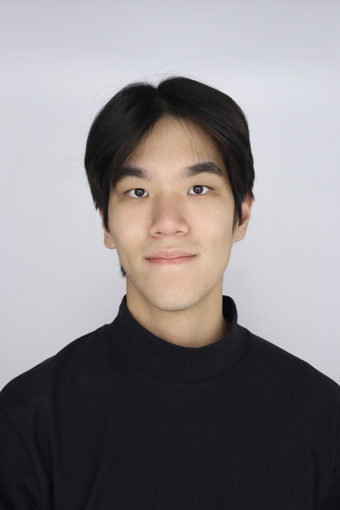

Electrical Engineering Undergraduate at Georgia Tech
Electrical Engineering undergraduate at Georgia Tech with experience in Python, CAD prototyping, and semiconductor packaging research. Looking to further explore digital IC design, semiconductor devices, and CMOS/VLSI design.

Education
Work & Leadership
Portfolio
Research
Recognition
International Genetically Engineered Machine (iGEM) · Team award
Among 400+ participating teamsHOBY International Young Scholars Conference
Third-place distinction at an international young scholars conferenceInternational Greenwich Olympiad
Selected STEM National RepresentativeKorean Science and Engineering Fair
Bronze recognition at a national science and engineering fairToolkit